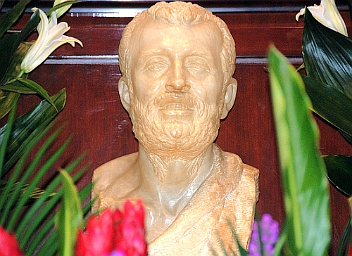
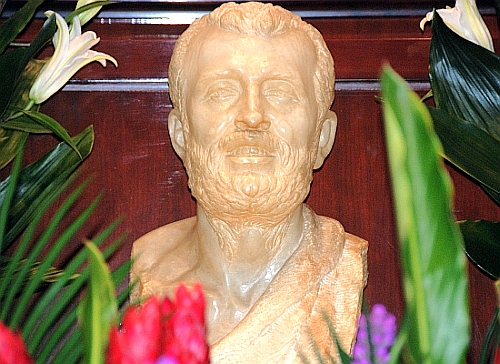
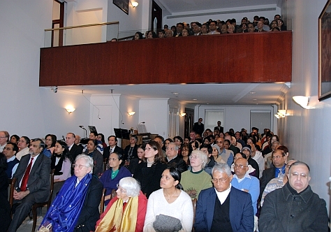
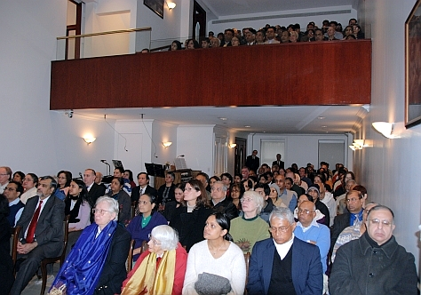

Ramakrishna-Vivekenanda Center of New York
Image Gallery
Swami Vivekananda's Birthday Service
February 2008

 

 



Sri Ramakrishna's Universal Message of God-consciousneses
(Excerpt from a talk given by Swami Adiswarananda at the Special Service on the occasion of the Birthday of Sri Ramakrishna, February 25, 2007)
The central theme of Sri Ramakrishna’s message is God-consciousness. God-consciousness is the essence of all teachings of all religions. It is the goal of all study of scriptures, philosophical speculation, prayer and contemplation, sacraments and rituals, charity and austerity, and pilgrimage to holy places. To Sri Ramakrishna, the message of all scriptures, of all religions, is that God alone is real and all else is illusory. One must grasp this message and then plunge into oneself for the realization of Truth. The essence of the Bhagavad Gita is given in Sri Ramakrishna’s inimitable words: “What is the significance of the Gita? It is what you find by repeating the word ten times. It is then reversed into ‘tagi,’ which means a person who has renounced everything for God. And the lesson of the Gita is: “O man, renounce everything and seek God alone.’” The purpose of all spiritual practices, Sri Ramakrishna indicated, is to become sincere. It is “to make our thought, word, and action the same.” While God-consciousness, the goal of religion, remains the same for all ages, creeds and dogmas, denominations and paths vary, as they must, to suit the diverse tastes of different seekers. Sri Ramakrishna gives us the essence of spiritual quest: “With sincerity and earnestness one can realize God through all religions. The Vaishnava will realize God, and so will the Saktas, the Vedantists, and the Brahmos. The Mussalmans and Christians will realize Him too. All will certainly realize God if they are earnest and sincere.”